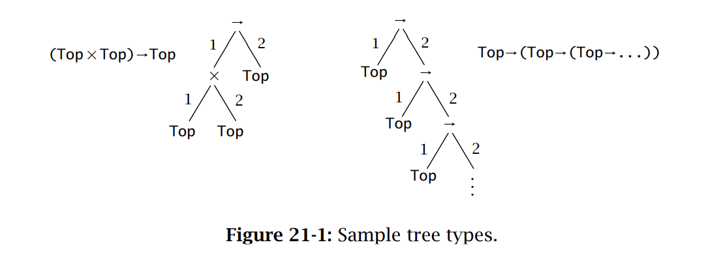
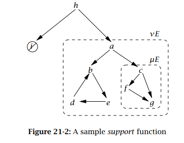

她很丑，还可怜兮兮的。但她身上洋溢着爱。
子类型化
子类型
包含
- 考虑如下作用：按照严格的记录类型定义，这是个非法的表达式。因为传入的参数类型为：$\{x:Nat,y:Nat\}$。但我们可以发现，它里面已经有了我们所需的$\{x:Nat\}$部分，至于y，我们 不关心。此时我们称传递类型为$\{x:Nat,y:Nat\}$的参数给希望得到参数类型为$\{x:Nat\}$的函数总是安全的。
:::info
进行子类型化的目的是改进类型化规则。我们说S是T的子类型，记为$S<:T$，意味着所有类型为S的项用在需要类型为T的上下文中都是安全的。这称为“安全代换原则”。
:::
子类型关系的类型规则：
通过增加这条类型规则，来通过一些类型检查。
子类型关系”<:”
- 子类型关系显然有传递和自反性。而且对于记录类型，显然有：此为广度子类型化。此为深度子类型化。此为置换子类型化。此为高阶语言（允许函数作为参数传递）的子类型化。这个规则比较奇怪，首先考虑一个函数$f:S_1\rightarrow S_2$，它可以接受$S_1$的子类型$T_1$作为传入参数，它输出的$S_2$也可以作为$T_2$类型安全地使用。所以函数f可以替换$T_1\rightarrow T_2$类型的函数安全使用。引入Top为超类型。$T::=…|Top$
子类型化和类型化的性质
引理[逆转定理]
若$S<:T_1\rightarrow T_2$，那么S一定为$S_1\rightarrow S_2$类型，其中$T_1<:S_1,S_2<:T_2$。
若$S<:\{l_i:T_i,i\in1..n\}$，那么S一定为$\{k_j:S_j,j\in1..m\}$类型，且标签$\{l_i\}\subseteq\{k_i\}$，且公共部分$l_i:T_i,l_i:S_i$一定有$S_i<:T_i$
引理
如果$\Gamma\vdash\lambda x:S_1.s_2:T_1\rightarrow T_2$，那么$T_1<:S_1$且$\Gamma,x:S_1\vdash s_2:T_2$。
如果$\Gamma\vdash \{k_a=s_a,a\in1..m\}:\{l_i:T_i,i\in1..n\}$，那么$\{l_i\}\subseteq\{k_a\}$且对公共部分$\Gamma\vdash s_a:T_i$。
引理[代换]
如果$\Gamma,x:S\vdash t:T$且$\Gamma\vdash s:S$，那么$\Gamma\vdash[x\mapsto s]\;t:T$。
定理[保持]
如果$\Gamma\vdash t:T$且$t\rightarrow t’$，那么$\Gamma\vdash t’:T$。
Top类型和Bottom类型
显然把error设置成Bot就不错，它可以在任何上下文出现。但这样的类型很流氓，需要慎重。
子类型化及其他特征
归属（Ascription）和强制转型（Casting）
- 之前介绍过归属算子$t\;as\;T$。像Java和C++这样具有子类型化的语言，强制转型往往有向上转型和向下转型。前者是直接进行的，而后者需要进一步扩展。
变式类型&列表类型
变式类型的子类型化规则完全类似于记录类型。
List的构造子是协变式，也就是：
其中$List\;T$表示一个有限长的，都是T类型的元素构成的列表。具体行为和规则可以谷歌。
引用
由于引用类型需要同时支持读$!$和写$:=$的操作，它的子类型化将及其严格。因为需要读，所以需要$S<:T$，即读出来的都能当T用；因为需要写，所以要求$T<:S$。因此有：
但是Java中却允许协变子类型化规则：
最初是出于多态的目的引入的规则，但由于它严重地影响了数组的性能（因为每次赋值都需要动态检查类型），被认为是语言设计的一个缺陷。
然而，我们可以引入类型构造子$Source\;T,Sink\;T$分别表示“有能力被读出T类型数据的类型”和“有能力存储T类型数据的类型”。那么有：
而这两个构造子都是协变的：
且
子类型化的强制语义
考虑下面这个问题。首先，Integer应该为Double的一个子类型，因为所有用double的运算都可以替换为integer。数学上讲，这就意味着整数集合是实数集合的子集，但是在计算机存储中，整型和浮点数的存储方式完全不一样。那就不能直接简单地将double 替换为integer。
我们可以采用子类型化的强制语义来解决这个问题。这种语义可以表示为一个函数，它将项从该语言的形式转化为一个更低级的不含子类型化规则的语言形式。我们选择含记录和Unit类型的纯简单类型lambda演算作为目标低级语言。
通常，编译过程包含了三个翻译函数：一个作用于类型，一个用来子类型化，一个用来类型化。用$[[-]]$表示类型翻译函数（空心中括号）：
定义符号$C::S<:T$表示推导树C推导出S是T的子类型。那么有：
这翻译其实就是把所有的子类型化规则用lambda演算替换掉。从而得到不含有子类型化的类型。譬如
引理，如果$C::S<:T$，则$\vdash [[C]]:[[S]]\rightarrow [[T]]$。
也就是说，这个翻译函数对子类型化$S<:T$的翻译结果就是一个$[[S]]\rightarrow [[T]]$的lambda抽象函数。
吻合性
我们需要对子类型的翻译函数给出语义解释（可以理解为，给出上面推导规则配套的公理），例如：
这是一种强制类型转换的语义。但是会有歧义，譬如在求值：
时，我们可以把true转为Int再转为String，得到求值结果“1”，或者把true转为Float再转为String，得到求值结果为“1.0”。
解决这个问题是在类型翻译函数的定义中附加一个要求，即吻合性：
- 对结论都为$\Gamma\vdash t:T$的类型推导$D_1,D_2$，若产生的翻译$[[D_1]],[[D_2]]$为目标 语言中行为等价的项，则称从一个语言中的类型推导转换为目标语言项的翻译是吻合的。
例如为了解决上面那个例子问题，就可以改变$[[Float<:String]]$函数的定义，使得$[[Float<:String]]\;1.0=”1”$。
交叉类型和联合类型
交叉算子：
这告诉我们，类型$T_1\wedge T_2$即可一当作$T_1$来用，也可以当作$T_2$来用。
例如我们可以给加算子赋予类型$(Nat\rightarrow Nat\rightarrow Nat)\wedge(Float\rightarrow Float\rightarrow Float)$，使其可以作用于两个自然数或两个浮点数。
然而交叉类型的规则会给语言设计者带来难题，更多时候使用一种证明更为容易的“精炼类型”。
联合算子$T_1\vee T_2$不做介绍==
子类型的元理论
我们增加一个规则，把之前深度、广度、置换子类型化规则合一：
有了这个规则，我们便无需再声明$S<:S$和$\frac{S<:T\quad T<:U}{S<:U}$这两条了。（因为都是上面规则的特例）
于是我们可以写一个小的程序来判断项的类型：
$subtype::T\rightarrow T\rightarrow Bool$
subtype S T = if T == Top then true
else if $S=S_1\rightarrow S_2$ and $T=T_1\rightarrow T_2$
then subtype $T_1\;S_1\wedge$ subtype $S_2\;T_2$
else if S和T满足上面那个规则 then True else False
算法类型化
根据我们之前给出的类型推导规则，共一个结论会有很多的推导式。譬如：
可以改写为：
这不是很好便于写程序生成推导。于是，类似之前的子类型，我们需要在保持推导能力的前提下，对推导规则进行压缩。于是就有了算法类型化：
算法类型化：
这套系统其实等价于之前声明的一大堆子类型规则，它可靠且完备。
算法类型化种，也可以引入Top合Bot。
合类型和交类型
[定义]对类型J和类型S，T，如果有$S<:J,T<:J$，且对所有满足$S<:U,T<:U$的类型U，都有$J<:U$，则称J为S和T的合类型。记为$S\vee T=J$。同理对类型M，如果$M<:S,M<:T$，且对所有类型满足$L<:S,L<:T$的类型L都有$L<:T$，那么$L<:M$，则称M为S合T的交类型，记为$S\wedge T=M$。
这有啥用呢，其实之前有要求：
if的then和else必须类型相同。但是考虑下面这个情况：
虽然then和else后类型不同，但是它们有个合类型$\{x:Bool\}$。即if的结果总是能当$\{x:Bool\}$类型来用的。
递归类型
递归类型简介
实例
整型列表
整型列表的递归定义（变式类型）：
对类型引入一个明确的递归操作符$\mu$：
读作“将$NatList$定义为满足$X=<nil:Unit,cons:\{Nat,X\}$的无穷的类型”。
相关算子：
$nil$表示空列表，而$cons:Nat\rightarrow NatList\rightarrow NatList$表示在给定列表头再加一个元素。
$isnil:NatList\Rightarrow Bool$可以判列表是否为空。
$hd:NatList\Rightarrow Nat$表示返回列表的头元素
$tl:NatList\Rightarrow NatList$表示删除列表的头元素。
饥饿函数
- 定义类型：
流
一个有用的饥饿函数的变形就是流类型：
它接受一个Unit类型，然后返回一个数字和一个新的流的序对。
有用的算子：
显然一个是返回读的值，一个是返回新的流。
利用不动点算子定义流：
解释下，中间括号里：
于是$fix\;c:Nat\rightarrow Stream$实际上就是一个读入整型，然后返回以其开头递增的一个流。就是解了一个递归函数：
于是有：
- 流的一个变型：这是进程类型，譬如：于是有：是个累加器。
对象
- 一个计数器对象：构造对象：于是有：
递归类型的递归值
- 在之前无类型lambda演算时，解递归的不动点算子我就有疑问，它不是可类型化的。但现在，我们可以利用递归类型定义它：即$x:\mu A.A\rightarrow T,x\;x:T$。
递归类型将无类型λ演算以一种良类型的方式嵌入含递归类型的静态类型化语言
考虑类型：$D=\mu X.X\rightarrow X$。$D=D\rightarrow D$。然后定义个将D到D的函数映射为D的投射函数：
定义函数：$ap=\lambda f:D.\lambda a:D.f\;a$。
于是我们可以把无类型lambda演算都整成D类型，以最简单的只含变量，抽象，作用的lambda演算为例：
我们可以认为，无类型lambda演算中任意一项$M$都可以用上面三条规则类型化$M^*:D$。
特别地，对于无类型lambda演算的不动点算子：
纯λ演算的嵌入可扩展为含一些特征（如数字）。此时我们可以重写D：
其中$diverge_D=\lambda_:Unit.fix_D\;(\lambda x:D.x):Unit\rightarrow D$。$diverge_D\;unit$表示直接发散掉。
递归类型的形式
- 牵扯到无穷递归的问题总是很麻烦。我们需要考虑究竟怎样考虑$NatList$和其递归展开式$\{nil:Unit,cons:\{Nat,NatList\}\}$间的关系究竟是什么？
1、相等递归。这就是我自然的理解，类似于$N=map\;(+1)\;N$。无穷加一还是无穷。但显然这样的类型检查算法将会很痛苦，因为它检查不了无穷多层的类型。
2、同构递归（iso-recursive）将类型和其展开式视为不同，但同构。使用标准的代换符号。譬如递归类型$\mu X.T$（T中含X），有：
这里我的理解还不是很到位。我的理解是，当实例化类型时，譬如我就想声明一个数组时，可以fold成一个$x:NatList$。但当我需要求值时，求到第几个就需要unfold几下。这样不要把递归类型看成一个无穷的类型，而把它看作“另一个类型的衍生类型”。而“另一个类型”我们并不需要知道它是啥，只需要知道需要访问时可以unfold就好了。
递归元理论
归纳和共归纳
- 声明$\mathcal{U}$是全集，是“世界上所有事物的集合”。
- [定义]：若$X\subseteq Y\Rightarrow F(X)\subseteq F(Y)$，那么函数$F\in\mathcal{P}(\mathcal{U})\rightarrow\mathcal{P}(\mathcal{U})$就是单调的。我们接下来的讨论都假设了$F$是个单调函数，而且通常把它当作一个产生函数。
[定义]：对于一个$X\subseteq\mathcal{U}$：
- 若$F(X)\subseteq X$，则称X是F封闭的。
- 若$X\subseteq F(X)$，则称X是F一致的。
- 若$X=F(X)$，则称X是F的不动点。
[Knaster-Tarski定理]：
- 所有对F封闭集的交集是最小的F不动点。
- 所有对F一致集的并集是最大的F不动点。
[定义]：F的最小不动点记为$\mu F$，最大不动点记为$\nu F$。
[说明]：产生函数往往可以用一组规则实例表示，譬如：
F就可以压缩为：$\frac{}{a},\frac{a}{b}$表示。（在另一篇博客《不动点和循环》中讨论了这种记法）
[推论]：
- 归纳原则：如果X是F封闭的，则$\mu F\subseteq X$
- 共归纳原则：如果X是F一致的，则$X\subseteq \nu F$。
说点自己的理解。实际上定义的这些东西，其实表达了我们推理的过程。集合X用于表示：目前通过公理和推导规则得到的定理的集合。它是单调的，因为一次推导并不会使我们得到的定理减少。这也在我不动点和循环那篇得到了讨论。
有限类型和无穷类型
考虑三种类型构造子$\rightarrow,\times,Top$。我们将类型表示为树的形式，节点用三种构造子中的一种作为标签。
把1和2的序列集合记为$\{1,2\}^*$，空序列记为$\bullet$，而$i^k$就表示i的k次方。如果$\pi,\sigma$都是序列，那么$\pi,\sigma$就表示把两个序列的串联。
[定义]：一个树类型是一个局部函数$T\in\{1,2\}^*\rightharpoonup \{\rightarrow,\times,Top\}$，它满足：
- $T(\bullet)$有定义
- 若$T(\pi,\sigma)$有定义，则$T(\pi)$也有定义。
- 若$T(\pi)=\rightarrow$或$\times$，则$T(\pi,1),T(\pi,2)$也都有意义。
- 若$T(\pi)=Top$，则$T(\pi,1),T(\pi,2)$都没意义。
若$dom(T)$是有限的，那么树类型T也是有限的。所有树类型的集合可记为$\mathcal{T}$，所有有限树类型构成的子集记为$\mathcal{T}_f$。
为了方便，将满足$T(\bullet)=Top$的树写为$Top$。若$T_1,T_2$都是树，把满足$(T_1\times T_2)(\bullet)=\times$和$(T_1\times T_2)(i,\pi)=T_i(\pi)$的树记为$T_1\times T_2$，把$(T_1\rightarrow T_2)(\bullet)=\rightarrow$和$(T_1\rightarrow T_2)(i,\pi)=T_i(\pi)$的树记为$T_1\rightarrow T_2$。于是给出两个例子：

可以根据语法给出有限树类型的更加简洁的定义形式：
子类型
[定义]：对两个有限树类型$S,T$，若有$(S,T)\in \mu S_f$，其中单调部分函数定义为：
那么$S$是$T$的一个子类型。其实$S_f$用规则可以压缩地写成：
其中应该把横线上的$S_1<:T_1$理解为$(S_1,T_1)$是$S_f$的输入，横线下理解为是输出。这也就是子类型的递归定义。
[定义]：扩展到无穷，有如果$(S,T)\in\nu S$，其中：
那么S是T的一个子类型。注意，这里用的是最大不动点了，需要考虑的是一个更大的类型全集。
[定义]：如果关系R在单调函数$TR(R)=\{(x,y)|\exists z\in\mathcal{U},(x,z),(z,y)\in R\}$下是封闭的。即$TR(R)\subseteq R$，那么关系$R\subseteq\mathcal{U}\times\mathcal{U}$具有传递性。
[引理]：设$F\in\mathcal{P}(\mathcal{U}\times\mathcal{U})\rightarrow\mathcal{P}(\mathcal{U}\times\mathcal{U})$为一个单调函数。如果对任意$R\subseteq\mathcal{U}\times\mathcal{U}$都有$TR(F(R))\subseteq F(TR(R))$，那么$\nu F$是有传递性的。
[定理]：$\nu S$具有传递性。S为定义无穷子类型的单调函数。
- [定理]：设F和G为单调函数，且$H(X)=F(X)\cup G(X)$，则$\mu H$为满足对F封闭和对G封闭的最小集合。
成员检查
- 本章中心内容：给定某全集$\mathcal{U}$上的产生函数F和元素$x\in\mathcal{U}$，怎么判断x是否在$\nu F$中？
通常一个元素$x\in\mathcal{U}$可以通过很多方法由F产生。也就是说，不止一个集合$X\subseteq\mathcal{U}$，满足$x\in F(X)$。称这种集合X为x的一个产生集。由于F的单调性，任何x的产生集的超集也是x的一个产生集。
[定义]：如果对所有的$x\in\mathcal{U}$，簇集：
要么为空，要么簇集中存在唯一一个集合是所有其他集合的子集，则说产生函数F是可逆的。
当F可逆时，部分函数$support_F\in\mathcal{U}\rightarrow\mathcal{P}(\mathcal{U})$定义如下：
扩展定义到集合形式：
我们的目标时提出一个检查产生函数F的最大和最小不动点中成员的算法。
[定义]：假如$support_F(x)\downarrow$，那么元素$x$是$F$支持的，否则就是F不支持的。一个F支持的元素x，若$support_F(x)=\emptyset$，那么称其为F的基。
对每个X，基x都在$F(X)$中。而F不支持的元素x不会出现在$F(X)$中。
[例]：考虑$\mathcal{U}=\{a,b,c,d,e,f,g,h,i\}$上的一个单调可逆生成函数$E$，它的推导规则为：
则很显然，以元素h为例，$G_h$就为所有含$i,a$的集合。而$support_E(h)=\{i,a\}$。因为只有i没有生成规则，所以i是唯一不被支持的元素。下图就说明了support关系，元素x指向的元素构成的集合就是$support_E(x)$。（其实就是把推导规则从结果到前提连线）

[定义]：假设F是一个可逆的产生函数，定义布尔函数$gfp_F$如下：
直观地解释，就是从X开始不断扩展他，直到他变成一致的，或包含一个不支持元素。
[引理1]：当且仅当$support_F(X)\downarrow$，且$support_F(X)\subseteq Y$，有$X\subseteq F(Y)$成立。
证明：原命题等价于证明$x\in F(Y)\quad iff\quad support_F(x)\downarrow\& support_F(x)\subseteq Y$。
首先假设$x\in F(Y)$。于是$Y\in G_x$，即$G_x\neq\emptyset$。因为F是可逆的，所以$G_x$中一定有个最小集合$support_F(x)$。所以有
$support_F(x)\subseteq Y$。
反之，根据单调性，若$support_F(x)\subseteq Y$，则有$F(support_F(x))\subseteq F(Y)$。由support，$G_x$的定义，
有$x\in F(support_F(x))$，所以$x\in F(Y)$。
[引理2]：假设P是F的一个不动点。那么$X\subseteq P$当且仅当$support_F(X)\downarrow$且$support_F(X)\subseteq P$。
证明：根据$F(P)=P$，直接转换成$X\subseteq F(P)$当且仅当$support_F(X)\downarrow$且$support_F(X)\subseteq P$。即刚证完的引理1。
[定理1]：如果$gfp_F(X)=true$，那么$X\subseteq \nu F$，反之$gfp_F(X)=false$的话，就有$X\not\subseteq \nu F$。
证明：
- 使$gfp(X)=true$只有两种情况：
- $support(X)\subseteq X$且$suppoert(X)\downarrow$。此时根据引理1，有$X\subseteq F(X)$，根据共归纳原则，有$X\subseteq \nu F$。
- $gfp(support(X)\cup X)=true$。由归纳假设，有$support(X)\cup X\subseteq\nu F$。所以有$X\subseteq\nu F$。
- 使$gfp(X)=false$也有两种情况，类似证明。需用引理2。
- 使$gfp(X)=true$只有两种情况：
[定义]：给定可逆产生函数F和元素$x\in\mathcal{U}$，x的直接前驱集合$pred_F(x)$为：
可以把它扩展到集合上：$pred_F(X)=\bigcup_{x\in X}support_F(x)$
定义所有可达元素：
扩展到$reachable_F(x)=reachable_F(\{x\})$。如果$y\in reachable_F(x)$，则y是x出发可到达的。
[定义]：如果对任一$x\in\mathcal{U}$，$reachable_F(x)$都是有限的，那么可逆产生函数$F$也说是有限状态的。
[定理2]：如果$reachable_F(X)$是有限的，那么$gfp_F(X)$就可以定义。因此，如果F是有限状态的，那么对任一有限集$X\subseteq \mathcal{U}$，$gfp_F(X)$都可以终止。
[总结]：根据定理1，用$gfp_F$函数就可以判断元素是否在最大不动点中，再根据定理2，这个算法对有限状态可逆函数总是正确的，可停止的。
- 此外，可定义布尔函数：$X\subseteq\mu F\Leftrightarrow lfp(X)=true$。它是对有限状态可逆函数检验最小不动点成员的方法。但它只对部分产生函数是正确的。